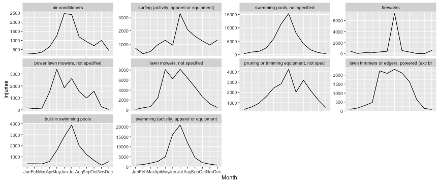

- Visualize the NEISS product injuries data for 2014
- The NEISS collects product-related injury data from select US emergency rooms and extrapolates to the entire US
- Focus on injuries that are not uniformly distributed throughout the year
Jim Pfleger
Here's a compelling example for July, showing the seasonal spikes in swimming and fireworks injuries.
